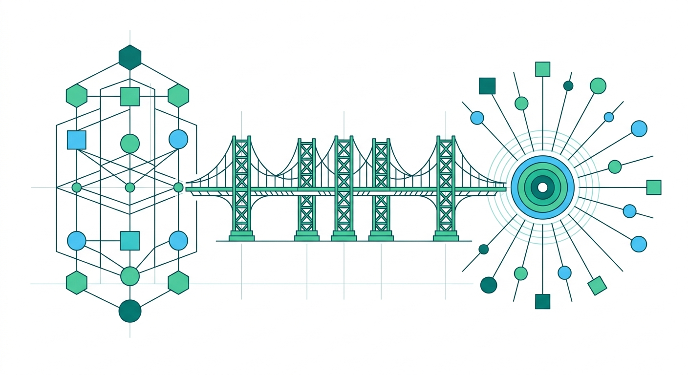

Del conocimiento individual a las capacidades empresariales.

SofLIA: la marca que vuelve reconocible la evolución organizacional
Cómo traducir el modelo de evolución organizacional en una propuesta clara, diferenciada y comunicable para el mercado.
Identidad estratégica de marca01
La identidad no adorna el modelo: lo vuelve reconocible.
El modelo define la transformación que SofLIA produce. La identidad hace que esa transformación pueda entenderse, recordarse y elegirse.
Lectura integradora de los dos documentos estratégicos
Del contenido a la percepción02
La marca se apoya en el modelo03
De piezas aisladas a sistema de evolución04
El recorrido que convierte un modelo en una marca elegible
01ModeloQué transformación existe
02PropuestaQué valor se ofrece
03PosicionamientoQué lugar se quiere ocupar
04NarrativaCómo se explica la diferencia
05AplicaciónDónde se vuelve experiencia
La identidad es el sistema que mantiene la misma lógica desde la estrategia hasta una presentación, una conversación comercial o un caso de cliente.
Una secuencia, no una colección de piezas05
SofLIA no compite por ser otra biblioteca de contenidos.
Alternativas aisladas
Resuelven una parte
- Curso, LMS o biblioteca
- Herramienta o automatización puntual
- Resultado esperado, camino opaco
SofLIA
Conecta el sistema completo
- Aprendizaje, práctica y criterio
- Procesos, memoria y capacidades
- Evidencia para observar evolución
La categoría se construye por integración06
La propuesta de valor se expresa como evolución07
El vocabulario también es infraestructura08
Coherencia con adaptación09
El modelo explica qué cambia dentro de la organización. La marca explica por qué ese cambio debe asociarse con SofLIA.
Verdad operativa→Significado→Reconocimiento→Elección
Esta es la relación estratégica entre ambos documentos: uno sostiene la promesa; el otro la hace visible y consistente.
La identidad funciona como interfaz10
Del centro estratégico a la experiencia11
La comunicación debe responder cuatro preguntas, en ese orden.
Práctica, memoria, IA con criterio y propósito.
Casos, procesos, evidencia y resultados que deben validarse.
Una arquitectura evita mensajes dispersos12
La marca debe sonar como el modelo que representa.
La expresión propuesta para SofLIA debe evitar dos extremos: la abstracción inspiracional sin mecanismo y la jerga tecnológica sin orientación humana.
ProfundidadAcción
Claridad
Explica lo complejo sin convertirlo en ruido conceptual.
Criterio
Distingue posibilidades, límites, evidencias y decisiones.
Acompañamiento
Se interesa por la práctica, no solo por la entrega.
Profundidad
Conecta la marca con un modelo de evolución real.
Orientación
Termina en una acción, una decisión o un siguiente paso.
La personalidad es una forma de operar13
| Punto de contacto | Pregunta que debe resolver | Qué debe conservar |
|---|---|---|
| Presentación ejecutiva | ¿Qué problema estratégico aborda? | Modelo y propuesta |
| Conversación comercial | ¿Por qué importa ahora? | Relevancia y diferencia |
| Propuesta | ¿Cómo se aplicaría? | Mecanismo y siguiente paso |
| Caso de cliente | ¿Qué evidencia lo sostiene? | Contexto, práctica y resultado validado |
La marca se prueba en la operación comercial14
Una identidad fuerte también define lo que SofLIA no debe parecer.
Deriva de marca
Cuando la promesa se simplifica demasiado
- ×Parecer una plataforma de cursos.
- ×Prometer automatización sin criterio.
- ×Usar IA como argumento sin contexto organizacional.
- ×Presentar resultados no documentados como hechos.
Disciplina estratégica
Cuando cada afirmación vuelve al modelo
- ✓Explicar el mecanismo antes que el adjetivo.
- ✓Diferenciar capacidad, herramienta y resultado.
- ✓Mostrar supervisión, trazabilidad y límites.
- ✓Separar evidencia disponible de hipótesis de valor.
La consistencia no limita la creatividad: protege el significado.
La diferencia también se protege por exclusión15
El modelo define la transformación. La identidad hace que el mercado pueda reconocerla.
La siguiente decisión no es diseñar más piezas. Es validar el núcleo, unificar el lenguaje y probarlo en una conversación real.
01ValidarQué debe quedar como verdad de SofLIA
02UnificarQué lenguaje debe repetirse
03DesplegarEn qué punto de contacto se prueba primero
SofLIA · identidad estratégica de marca16